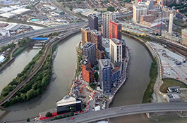
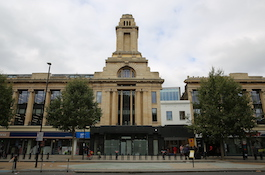

Queen Mary has five campuses in London, all of which are well connected to a range of public transport, including the London Underground system, with central London just minutes away.
The Mile End campus is home to most of Queen Mary's academic schools, as well as several halls of residence, lecture theatres, the Mile End Library, and our central administrative services.
Based here: our humanities, social sciences, science and engineering students
The Whitechapel campus is the main home for our Faculty of Medicine and Dentistry, and includes the Blizard Institute, the Institute for Health Sciences Education, the Whitechapel medical Library, the Institute of Dentistry and the Royal London Hospital.
Based here: our medicine and dentistry students
Charterhouse Square is home to the medical research headquarters for the Wolfson Institute of Population Health, the John Vane Science Centre, the Joseph Rotblat Building and the Heart Centre. There is also a hall of residence for our medical students.
Based here: some of our postgraduate medical research students
The West Smithfield campus, which includes St Bartholomew's hospital (Barts) and the West Smithfield Medical Library, is home to some of our cardiovascular, cancer, epidemiology and public health research facilities.
The Postgraduate Law Centre at Lincoln's Inn Fields is the new home of the Centre for Commercial Law Studies (CCLS) and a base for LLM teaching and postgraduate research students.
Based here: some of our postgraduate law students

The London City Institute of Technology is a collaboration between Queen Mary University of London, Newham City College and a wide range of employers. Based on London City Island, the Institute specialises in delivering higher technical education and apprenticeships with a focus on STEM subjects, such as engineering, digital and construction.

Department W is a newly refurbished building which opened in September 2021, containing office space for our Professional Services staff. It is located halfway between Queen Mary's Mile End and Whitechapel campuses.Based here: many of our Professional Services teams
Queen Mary students can also study for some of our programmes in the French capital. We teach at the University of London Institute in Paris (ULIP), in the 7th arrondissement, a short walk from the Champs Elysées.
Based here: some of our humanities and social sciences students
We launched our new medical school on the Maltese island of Gozo with the first cohort starting on a new campus in Victoria in September 2017.
Based here: some of our undergraduate medical students
Queen Mary runs three joint programmes with universities in China: Beijing University of Posts and Telecommunications; Nanchang University; and Northwestern Polytechnical University. We have more than 4,500 students based in China.
Based here: some of our undergraduate science and engineering students
Our collaboration with Singapore Management University enables Queen Mary to offer a Dual LLM in Commercial Law, taught in both Singapore and London across 15 months.